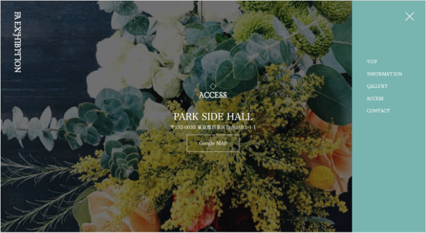

◆イベントサイト
フラワーアレンジメントの展覧会サイトのデザインを改善しました。
Problem
主な問題点
-
黒を基調とし、高級で近づき難い
GALLERYの写真とも合わない - フォントやタイトルが単調
- ナビのデザインが微妙
Solution
改善案
- ターゲットに合うピンクベージュを基調に
- フランスヴィンテージっぽいフォントに
-
ナビは右に縦長で表示し、ターコイズグリーン
の配色でメリハリと世界観を

Before
- メインビジュアルに余白が無く圧迫感がある
-
背景の黒は高級で近づき難く、GALLERYの
写真とも合わない - フォントが単調でタイトルにもメリハリが無い
- タイトルの装飾が下線だけでつまらない
- 重要な日程が小さく、情報が整理されていない
-
ナビが上から中途半端な長さで表示、
テキストも中央揃えでバラバラした印象、
背景が同じく黒でわかりにくい - 左上のロゴが単調でロゴっぽくない
After
-
メインビジュアルに余白を増やし、美しさを
引き立たせる -
ピンクベージュを基調にし、ターゲットの
3-40代女性のイメージに合うように -
フランスヴィンテージっぽいフォントに変更、
タイトルを装飾的にしてメリハリを -
タイトルは白にしてわかりやすく、
小さいダイヤを装飾に追加 - 日程を大きく、情報をわかりやすく整理
-
ナビは右に縦長で表示し、ターコイズグリーン
の配色でメリハリと世界観を表現 - 左上のロゴは縦書きにしてアクセントに